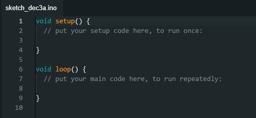
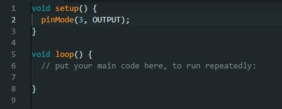
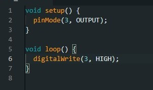
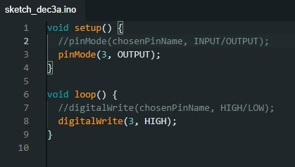

Objective: Turn on an LED.
Now let us look at the file. The first thing we will see is that there are already things written in it. It is two parts. The setup() part and the loop() part.
The setup() part is the code that is executed first. This code, as the name suggests sets everything up for the loop() part. The code in this part is executed once and never executed again. The code gets executed from the top to the bottom , one instruction at a time.
After the setup() is complete we go into the loop() part. The loop part runs until either it’s power is turned off we made it turn off in the code. The code gets executed from the top to the bottom, one instruction at a time.
Choose the pin we are going to use and tell the computer whether we want to use this pin as an input or as an output. We will use pin 3 and use it as an output. Spelling is important. Do not forget the Semicolon.
Let us make the output of this PIN high. We can understand what the next line of code is doing by making the Arduino board a metaphorical battery, where the positive side of the battery is at the pin number we have selected (in this case 3) and the negative side of the battery is at the ground pin. When the pin is high the battery is charged, when the pin low the battery is flat.
Specify the pin number and then say wheter the output should be high or low.
The code that is behind // in the code example are called comments and are not seen by the computer. It is there so that both you and other people can add notes in the code file so that everyone knows what the code is doing.
